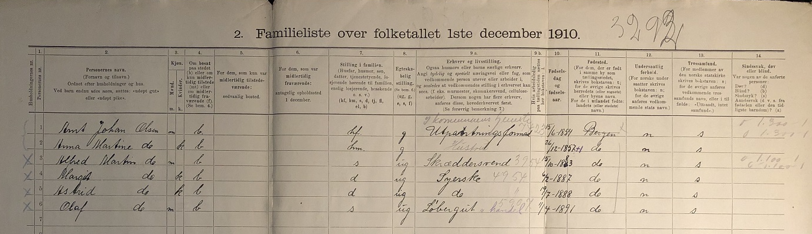
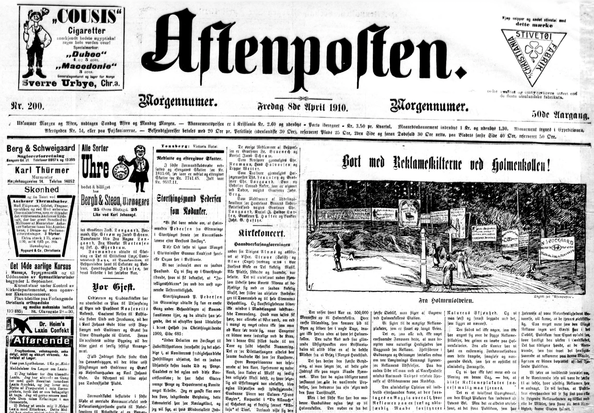
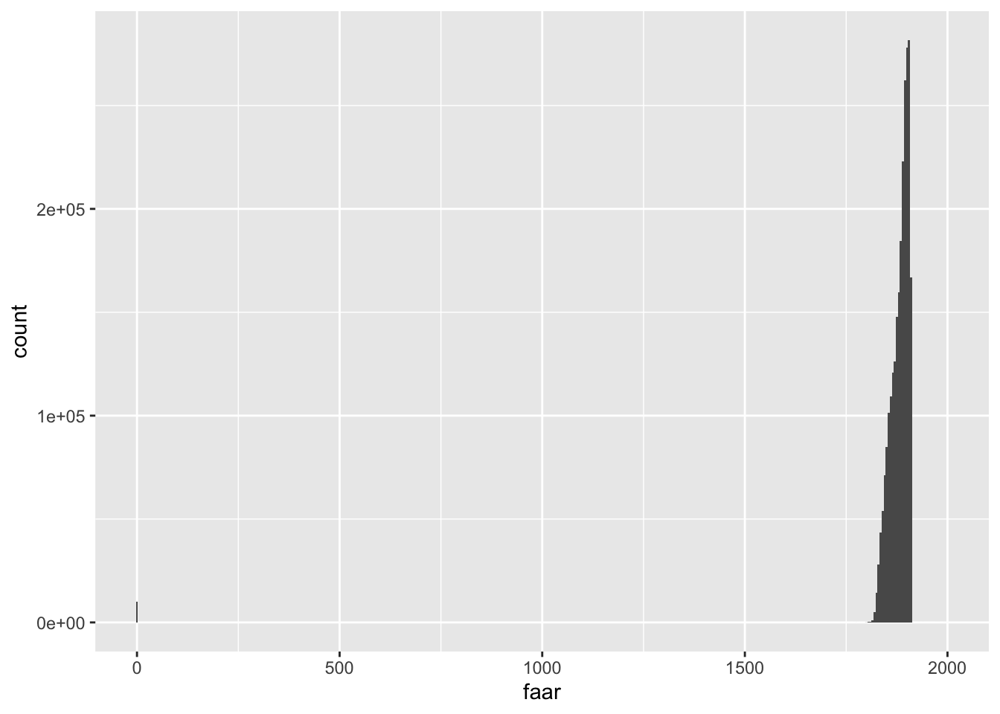
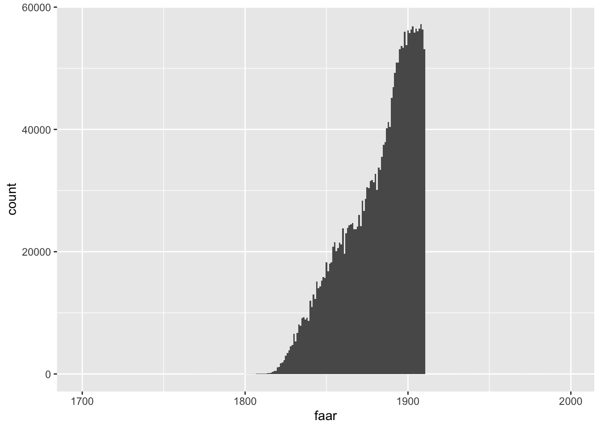
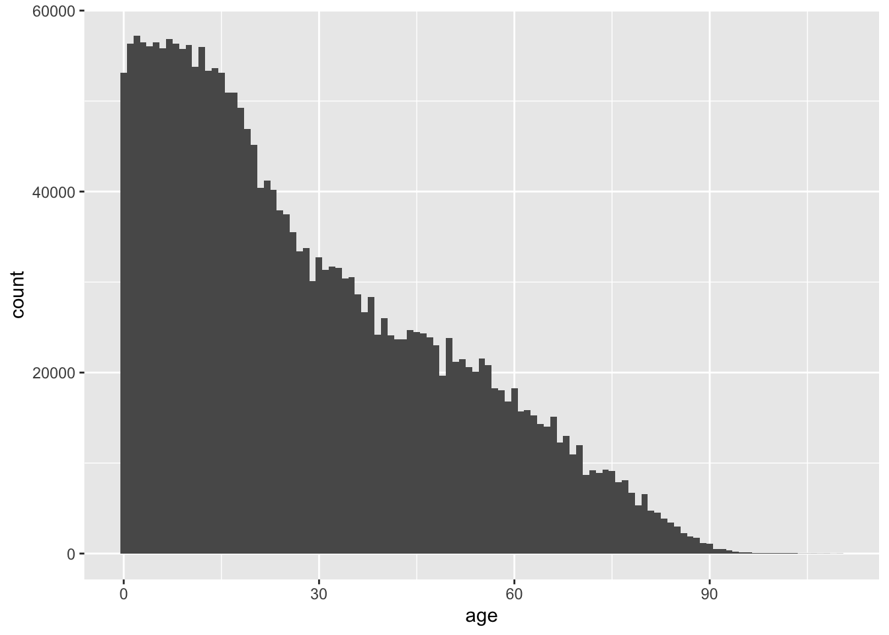

This assignment explores both the 1910 Norwegian census and the newspapers published in Norway during that year. The aim is to be able to map the information contained in those sources. In the process, we will also practice the crucial skill of “cleaning” data, that is, making it ready for subsequent analyses.
Question 1
Census are a crucial source of information about the demographic and socio-economic characteristics of the society performing the enumeration. The image below provides a sample of the 1910 Norwegian census. Organised by households, it includes name and surname, sex, age, place of birth and residence, marital status, occupation and religion, among other information. Many other details can also be inferred, such as the position in the household or the number (and type) of people residing in each household. You can, for instance, count how many children were residing with the family. This information has been digitised in full by the Norwegian Historical Data Center hosted at UiT. You can find the a curated version of this data set in Blackboard. Given that it is stored as a .txt file, you will need to import it into R using the function read_delim() and specifying the following argument delim = "\t". In total in contains information on the almost 2.5 million people living in Norway at that time.

Sample of the 1910 Norwegian census. Source: Digital Arkivet.
This exercise requires mapping the variation in early marriage in 1910 using municipalities as the unit of analysis. A way to look into early marriage using the census is to compute the percentage of the population aged 16-20 who was married (or widowed). Note that most variables are formated as “string” even when they are numerical, so they need to be formated properly first using as.numeric(). The shapefile containing the Norwegian municipalities at that time can be found in Blackboard.
Question 2
The other source we will be using is the newspapers published in Norway in 1910. The National Biblioteket has gathered thousands of these records. Instead of searching online, we will use the R package dhlabR to directly interact with the corpus. If you have trouble downloading this packages (due to its dependencies), you can use the .csv file with the corpus of newspapers that is in Blackboard.

Sample of a Norwegian newspaper: Afenposten (April 8, 1910). Source: National Biblioteket.
Here, you will map the number of newspapers published in Norway in 1910 according to their place of publication. The corpus of newspapers can be retrieved using the dhlabR package. As well as this source, you will need a spatial object to be able to do the mapping. You can either use an already existing shapefile containing Norwegian locations or use the geocoder package to extract the geographic coordinates that are needed to create such a (point) shapefile.
Solution
Let’s start by importing the data set and exploring how it looks like (as well as clearing the environment and loading the tidyverse package). Quarto documents do not need to set the working directory: it is automatically defined to the same folder the .qmd file is located (the root folder). Given that the file is named census-1910.txt and is in my folder data/census-1910, the code below reads it into R. This is a text file and most fields are recorded as string variables encoded with UTF-8 and using tab as the separator. We are therefore using read_delim(), part of the tidyverse, to import this file, including the argument delim = "\t" to indicate that each field is separated by a tab.1 Typing the name of the newly created object census allows inspecting its contents but you can also use glimpse() to check how all fields look like.
1 Defining the locale helps making sure the characters are properly encoded and recognised.
As you can see, the first three columns help situating each observation: municipality of residence, followed by the household number and the individual number within that household. It then includes personal information (name, surname, sex and civil status), followed by occupation and other information such as birtdate (separated in three columns: day, month and year of birth) and place of birth, nationality and religion. Note that many of these fields record numbers (instead of the actual value). This is because this information has been encoded to homogenise it and facilitate its use. You can find what these numbers mean in the file named “codebook.pdf”.
We are interested in age at marriage. Although there is no field recording age, the variable faar reports year of birth. It is always advisable to inspect the data, so there are no surprises. Given that faar is formated as a character field (string), it needs to be transformed into numerical if we want to take advantage of its numerical properties.
Show code
census <- census |>mutate(faar =as.numeric(faar))census |>ggplot(aes(x = faar)) +geom_histogram(binwidth =5)

As you can see below, there are a bunch of observations whose year of birth is 0. As the codebook makes clear, this is a code for not having information (a missing value). If you check, they comprise 10,194 rows (observations). We could convert it into NA or just restrict the analysis excluding those observations using filter(faar!=0). However, if we plot faar again, the graph looks weird because it extends before 1700 and beyond 2000.
Show code
census |>filter(faar!=0) |>ggplot(aes(x = faar)) +geom_histogram(binwidth =1)

Although we don’t see columns there, they are there but they are minuscule because they refer to very few observations (whose numbers are negligible compared to the scale of the graph, in hundreds of thousands of observations). If you explored the data using filter(). you will see that there are observations with implausible birth years. In historical data sets, dirty data is all around. If we could, we would check the source and correct their values (if possible). Here we adopt a more lazy (call it practical) approach and simply disregard them. Given that the census is conducted in 1910, we only consider those with years of birth between 1800 and 1910.2 Replicating the histogram above yields something more informative.3
2 If you check, this involves disregarding only 79 observations, which is a minimal fraction of the full population.
3 Note that the amount of age-heaping is much smaller than what we observed in assignment 3. Norway in 1910 was a more numerically-skilled population than rural Spain in 1860.
Show code
census <- census |>filter(faar!=0) |>filter(faar>=1800& faar<=1910) census |>ggplot(aes(x = faar)) +geom_histogram(binwidth =1)
This looks ok. Given that are interested in age of marriage, we can now derive their ages based their birth year and on knowing that the census was conducted in 1910.
Show code
census <- census |>mutate(age =1910-faar)census |>ggplot(aes(x = age)) +geom_histogram(binwidth =1)

The information on who is married or not, marital status, is contained in the field sivilstatus. As shown below, this field contains five different categories:
Show code
census |>count(sivilstatus)
# A tibble: 5 × 2
sivilstatus n
<chr> <int>
1 enke 141120
2 gift 782313
3 skilt 1879
4 ugift 1490838
5 ukjent 46869
We therefore need to compute a dummy variable classifying the individuals as married (1) or not (0) using if_else() or case_when(). Being separated or a widow also implies having been married, so they should be classified accordingly. Note also that the category “ukjent” is better if codified as missing (NA), so we do not treat them as not married.
Show code
census <- census |>mutate(married =case_when( sivilstatus %in%c("gift", "skilt", "enke") ~1, sivilstatus=="ugift"~0, sivilstatus=="ukjent"~NA_integer_))census |>count(married)
# A tibble: 3 × 2
married n
<dbl> <int>
1 0 1490838
2 1 925312
3 NA 46869
Let’s now compute the percentage of the population age 16-20 who were already married. We restrict the analysis to that age-group and the calculate the average (the mean) of the variable married. Given that this is a variable that can be 0 or 1 at the individual level, the average of all those 0s and 1s in the fraction of the population classified as 1. If we want the percentage, we just multiply time 100.
Show code
census |>filter(age>=16& age<=20) |>summarise(married =100*mean(married, na.rm =TRUE))
# A tibble: 1 × 1
married
<dbl>
1 2.12
So 2.12 per cent of the Norwegian population aged 16-20 was married in 1910. This number however could be different in different regions or municipalities. Remember that the field kommunern classified each individual into the municipality they were residing. The variable fsted provides the municipality of birth. Instead of the actual names, this information is encoded into municipal codes. If you inspeac one of these fields, you will see all those codes. In total, there were 659 municipalities.
Computing the percentage of the population who were married in each of these locations just involve replicating the code above but adding the group_by(), so the computations take place for each group (municipality here) separately. We store the results in a separate object.
In the municipality with code “0101”, 1.4 per cent of the population aged 16-20 was married. The other rows provide the same information for the remaining municipalities (up to 659).
This is the information we want to map. In order to do so, we need a spatial object with the municipal boundaries in 1910. We have that shapefile in the course materials (“kommuner_1910.shp”),4 so let’s now import it using read_sf(), which is part of the package sf. We use the argument options = "ENCODING=LATIN1" to make sure we are able to read the Norwegian characters it contains.
4 As discussed in class, it actually refers to a bunch of files with the same name but different extensions.
This is a curated shapefile that reconstructs the municipal boundaries in 1910. It contains 659 features (polygons) that, conveniently, match the number of municipalities that are also present in the 1910 census. As we can see above, we have columns with municipal and regional codes, as well as the name of the municipality itself. The column geometry contains the spatial coordinates necessary to map their contours. Let’s check it using the package tmap.
Next step is to attach the information on municipal early marriage to this spatial object, so it can be mapped. Both objects have 659 features (rows) each. The fields containing the names of the municipalities are named differently: KNR in the GIS file and kommunenr in the census.5 We therefore merge the two objects using full_join() and those two fields as matching fields. Always check that the matching is what you expected. Not only the resulting object has the expected number of rows,6, but the code below shows that all rows have info on the early marriage rate.
5 The shapefile has actually 3 fields identifying the municipalities: 2 municipal codes (in string and numerical format, respectively) and 1 with their names.
6 Non-matched features from both objects would also be listed, thus increasing the number of rows.
Show code
kommuner_gis <- kommuner_gis |>full_join(married_kom, by =c("KNR"="kommunenr"))kommuner_gis |>filter(is.na(married))
Simple feature collection with 0 features and 5 fields
Bounding box: xmin: NA ymin: NA xmax: NA ymax: NA
CRS: NA
# A tibble: 0 × 6
# ℹ 6 variables: KNR <chr>, FNR <chr>, KOMMNR <int>, KNAVN <chr>,
# geometry <GEOMETRY>, married <dbl>
In 1910, early marriage was generally low all over Norway. On average, the percentage of the population marrying early was very small (2.1 per cent). However, there is substantial variation across the country. There are a few areas were the number of young people marrying early was higher in some inland municipalities and especially in the north where it could reach up to 14 per cent of the population aged 16-20). The code below lists the municipalities with the highest rates.
The next step would be to know why these municipalities had such a high rates. As we learnt last week, one possibility is just chance. In small municipalities (with only a few young people), the fact that many of them married could be just a result of chance.7 It would be therefore interesting to show confidence intervals to see whether those figures are “really” different from the other ones. Another possibility is selection bias. It is plausible that some single individuals had migrated, leaving more married ones, relatively speaking. In this case, what we are observing (higher marriage rates) are not the result of a particular cultural setting but of higher migration rates. Lastly, the observed patterns could reflect different behaviour: cultural values (shaped by tradition, religion, etc.) could influence the way people behaved in these areas and therefore explain their tendency to marry early.
7 The same way that the fact that there are municipalities with 0 people getting married before age 20 could also result merely from chance.
Let’s now move on to newspapers and explore the media landscape in Norway in 1910. We retrieve the corpus from the National Biblioteket using the function get_document_corpus() (from the package dhlabR). I am going to assume that either the digitised collection is complete or, at least, representative of the universe of newspapers published in Norway at that time. It is however part of the historian’s toolkit to practice source criticism and assess the potential biases in the existing material.8
8 Computational and quantitative analyses also help assessing those biases (detecting, for instance, systematic gaps in the source).
Indicating 1910 and 1911 as from_year and to_year will return the newspapers published in 1910.
The function returns a data set of 42,966 rows, which means that there are this number of texts associated to newspapers published 1910. We now structure the data frame, so we can work with it more easily, and keep only the variables that might be more useful: dhlabid, title, year and city.
The corpus has 21,223 newspapers. Feel free to explore the content of the different fields. As we can see, there is missing information in the variable city. It might sometimes be possible to infer that information from the title but let’s proceed as it is. The code below computes the number of newspapers published in each location (city) in 1910. There are 54 known locations.
We now have an object containing a list of locations and the number of newspapers published in each of them in 1910.
In order to map this information, we need a spatial object with municipal boundaries (polygons) or simple points in space (dots). Given the type of information we have, dots might be better because we can visualise importance by increasing the size of the dot.
It would be relatively easy to find a shapefile with Norwegian locations online. This would be a reliable method because we would know that they spatial locations are correct. We could then joint the two pieces of information as we have done above. The names in the matching fields should correspond (unless you perform a fuzzy matching), so some cleaning would be perhaps required.
Instead we are going to obtain the coordinates for those locations using the package tidygeocoder. In order to improve the chances that the geocoding tool finds the locations accurately, we are going to provide more information. Here, we are just adding that they are all in Norway but we could also indicate the region they belong to if we had that information.
We are now ready to use geocode() to automatically retrieve the spatial coordinates of our list of locations. We are using the osm geocoding service and requesting full_results makes it easy to double-check what kind of locations we have got (more details in the course materials: mapping.pdf).
The results seem to be ok. We now have two columns, lat and long with the spatial coordinates we needed. We are going to assume that this is ok but you should check (one way of checking is by mapping them).
This is a regular object but it now contains two columns with the xy coordinates (longitude/latitude). We can now transform it into a spatial object using this information and assigning a Coordinate Reference System. Given that the spatial coordinates are obtained from a global repository, we are going to use the WGS84 geographic coordinate system (EPSG:4326).9
9 This GCS is the standard for GPS and uses latitude and longitude in decimal degrees to define locations on Earth’s surface. We can always transform the crs to one more appropriate for continental Norway later: e.g. ETRS89 / UTM zone 33N (EPSG:25833).
We can then map it, indicating that we want the size of the dots to change according to the number of newspapers published in 1910 (column obs). As mentioned above, mapping the locations also allow checking whether the map looks ok.10
10 You could for instance use tm_text() to add labels with the city names to the map.
This looks quite ok but we need a reference, so the reader can better situate these locations to the Norwegian context. We could use the Norwegian municipalities or get one from the package geobounds. We do the latter, so you can learn how to obtain any country (or several) in the world. The function gb_get_adm0() returns the national boundaries of the defined country.11 We include the argument simplified = TRUE: we sacrifice some precision in how the boundaries are draws, so the file is smaller and therefore easier to handle (this is advisable for Norway given all the fjords). Lastly, we also make sure they are in the same CRS.12
11 Other functions, such as gb_get_adm1() or gb_get_adm2(), up to 5, provide lower level administrative boundaries (regions, districts, municipalities, etc. depending on the country).
12 Otherwise, use st_transform() to change one of them based on the other.
We can now replicate the map adding the Norwegian boundaries. It is sometimes advisable to have polygons as the first layer and the points as the second one. Feel free also to play with the aesthetics of the map until you find one that satisfies you.
And that’s it. Here you have a map with the intensity of newspaper publications in 1910. Recall that there were many documents that did not have information on the city of publication, so this is not a full picture of this phenomenon. More work could be done trying to assign a location to those newspapers (if possible). In any case, this is quite informative.